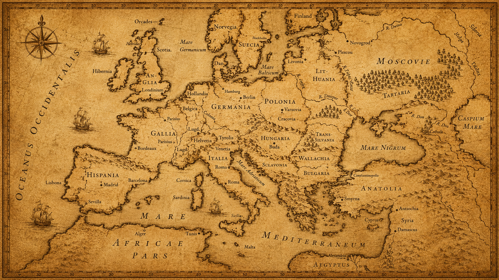

I was born in Alexandria — where the world once came to learn.
Everything began there — where my parents taught me that education was a gift meant to be shared.
Then I left — to learn from the world.

But Egypt never left my heart. No matter how far I traveled, a part of me was always home.
For more than forty years, I cared for children, families, and patients facing some of life's hardest moments. Every lesson prepared me for what comes next.
Along the way, I learned how fragile — and how precious — a single life can be.
There comes a moment when success is no longer enough. Only significance remains.
I don't want to build another clinic. I want to build something that will still heal people long after I am gone.
So I am coming home. Not to arrive — but to begin.
Because everything I have ever built has been preparing me for this.
Now it is time to build something that belongs to Egypt — and that will serve generations to come.